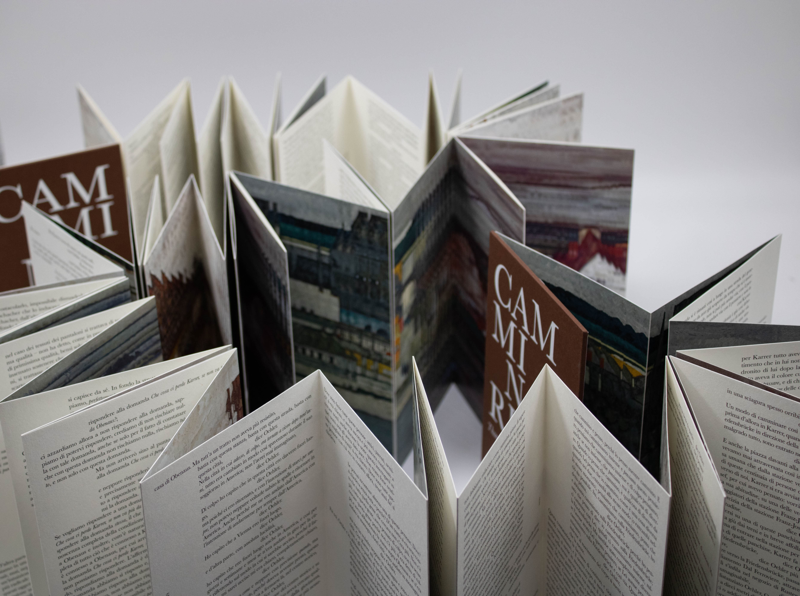
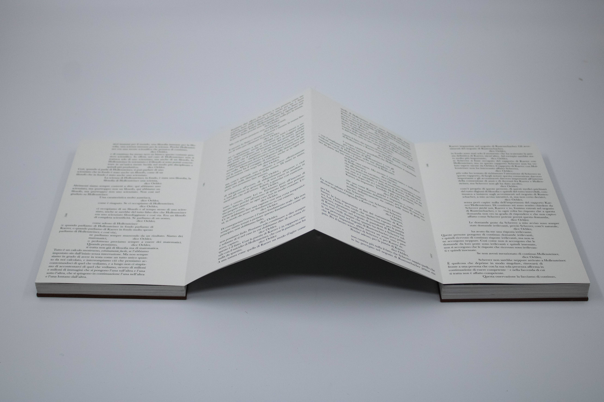
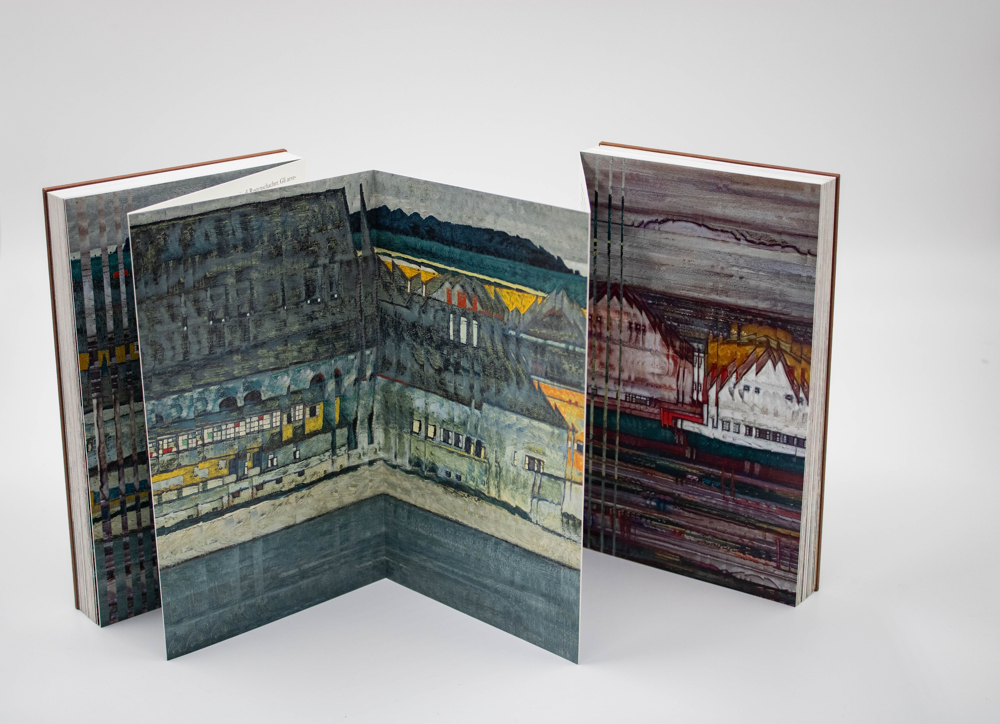
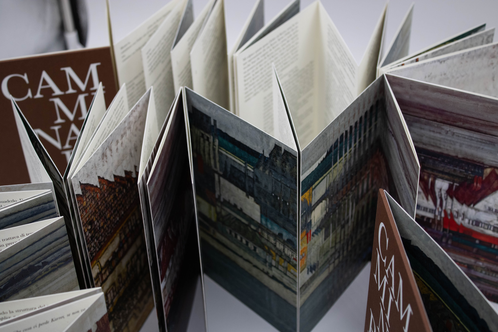
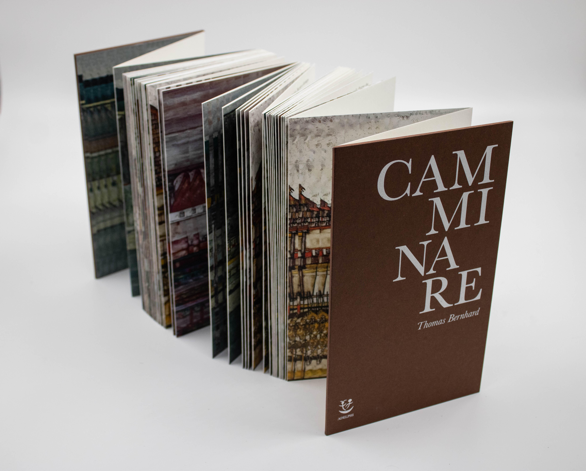

CAMMINARE
Camminare è un progetto editoriale che parte dall’impaginazione del romanzo Camminare di Thomas Bernhard per realizzare un libro visivo. Il progetto si sviluppa come una traduzione visiva e materiale dei temi centrali dell’opera. Il libro è stato concepito in formato leporello, struttura che consente una fruizione continua e potenzialmente infinita: da un lato si dispiega il testo, dall’altro una sequenza di immagini della città di Vienna, costruita attraverso i dipinti di Egon Schiele, in particolare vedute di case e periferie urbane.
L’impaginazione del testo riflette la natura dialogica e ossessiva del romanzo: le parole sono distribuite in colonne tra loro incastrate, ciascuna associata a una voce, mentre al centro emerge visivamente una parola ricorrente, a sottolineare il carattere iterativo e circolare del pensiero.
Il tema della circolarità, fondamentale nell’opera, è ulteriormente tradotto nella scelta di una doppia copertina: il libro può essere aperto da entrambi i lati, generando un’esperienza di lettura non lineare, priva di un vero inizio o di una conclusione definitiva, in cui testo e immagine si rincorrono in un movimento continuo.




